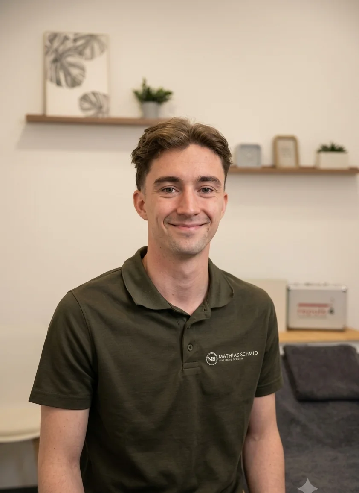

Ihr Körper bekommt meine ganze Aufmerksamkeit
Mein Name ist Matthias Schmid, ich bin 24 Jahre alt und ausgebildeter medizinischer Masseur sowie Heilmasseur. Schon früh habe ich mich für den menschlichen Körper, Bewegung und Gesundheit interessiert — heute darf ich meine Leidenschaft zum Beruf machen.
In meiner täglichen Arbeit lege ich großen Wert auf eine individuelle, ganzheitliche Betreuung und arbeite gemeinsam mit meinen Klient:innen an langfristigen Lösungen.
Ich arbeite eng mit einem Sportorthopäden sowie einem Physiotherapeuten zusammen. Diese Zusammenarbeit ermöglicht es mir, meine Behandlungen optimal auf die persönlichen Beschwerden und Bedürfnisse meiner Klient:innen abzustimmen — sei es zur Regeneration, Prävention, Schmerzlinderung oder Unterstützung im sportlichen Alltag.
Qualifikation & Zusammenarbeit
- Ausbildung zum medizinischen Masseur — abgeschlossen
- Aufschulung zum Heilmasseur — abgeschlossen
- Enge Zusammenarbeit mit einem Sportorthopäden und einem Physiotherapeuten
- Schwerpunkte: Regeneration, Prävention, Schmerzlinderung und Unterstützung im sportlichen Alltag
- [Ausbildungsstätte, Abschlussjahr, Fortbildungen und Zertifikate bitte ergänzen]
Eine vollständige Auflistung der Ausbildungsnachweise erhöht das Vertrauen deutlich — die fehlenden Angaben sollten vor dem Livegang ergänzt werden.
Ruhe mitten in der Stadt
Die Praxis in der Wiener Innenstadt ist bewusst schlicht gehalten: ein heller, ruhiger Behandlungsraum mit höhenverstellbarer Liege — damit Sie zur Ruhe kommen können.

Was Klient:innen sagen
[Platzhalter: Hier werden künftig Google-Rezensionen bzw. Kundenstimmen eingebunden.]
Solange keine echten Bewertungen vorliegen, sollte dieser Bereich vor dem Livegang ausgeblendet werden —
erfundene Testimonials sind rechtlich unzulässig und schaden dem Vertrauen.
Lernen wir uns persönlich kennen
Vereinbaren Sie jetzt Ihren Termin — ich melde mich innerhalb von 24 Stunden bei Ihnen zurück.
Termin buchen